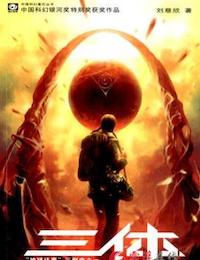
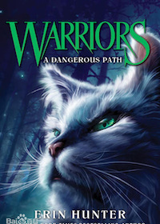

所谓爱好,不光是你喜欢做的事,而是你愿意付出代价去做的事。
我的宝藏书库

如此尽情地描绘人类终结之时的场景。这一次他彻底沉入到末日景象之中，并从中找到了力与美，体悟到人类悲剧的深刻性。

是我的童年回忆，也是宝藏小众书籍。
动漫推荐 |
||
| 动漫名称 | 内容简介 | 出版时间 |
| 《排球少年》 | 小时候，男主角日向翔阳从电视上看见了排球比赛，乌野高中的一名小个子在球场上的英姿，简直就是个“小巨人”，翔阳对此印象非常深刻，并开始迷上排球，一直想成为“小巨人”一样的人。 | 2012年6月4日—2020年11月4日 |
| 《进击的巨人》 | 107年前（743年），世界上突然出现了人类的天敌“巨人”。面临着生存危机而残存下来的人类逃到了一个地方，盖起了三重巨大的城墙。人们在这隔绝的环境里享受了一百多年的和平，直到艾伦·耶格尔十岁那年，60米高的“超大型巨人”突然出现，以压倒性的力量破坏城门，其后瞬间消失，凶残的巨人们成群的冲进墙内捕食人类。 | 2009年9月9日—2021年4月9日 |
| 《灵能百分百》 | 该作品讲述“当数值到达100时，惊人的事情即将发生。超能少年·路人的大爆发。” | 2012年4月18日—2017年12月22日 |
| 《火影忍者》 | 十多年前一只恐怖的尾兽“九尾妖狐”袭击了木叶隐村，第四代火影拼尽全力，以自己的生命为代价将“九尾妖狐”封印在了刚出生的漩涡鸣人身上。木叶村终于恢复了平静，但村民们却把鸣人当成怪物看待，所有人都疏远他。在伊鲁卡老师的关心下，鸣人始终保持着乐观的精神。为了让更多的人认可自己，他下定决心要成为火影！ | 2000年3月3日—2015年2月4日 |
| 《全职猎人》 | 主人公杰·富力士从小在鲸鱼岛长大，与米特阿姨和阿婆相依为伴。性格开朗的他，有着能与动物沟通的灵性。因为无父无母，杰将米特阿姨当成自己的生母爱着。直到9岁那一年，杰在森林里被一位青年男子搭救。从他口中杰得知自己的父亲还活着而且职业是猎人。在说服米特阿姨之后，杰独自踏上了寻父的征程。于是，杰决定成为猎人，从这里开始找寻他父亲的踪迹。靠这样一种信念开始了冒险旅途，并在旅途当中结交好友，不断成长，从而引发了后面的所有故事，引出猎人的精彩世界。 | 1998年6月4日 - 未完结 |
电影推荐 |
||
| 电影名称 | 内容简介 | 上映时间 |
| 《一条狗的使命》 | 一只叫贝利的狗狗被小男孩伊森和妈妈救下，从此跟他们生活在一起，陪伴小主人成长、玩耍、恋爱，长大后的伊森去外地读大学，而贝利渐渐衰老离开人世。转世后贝利带着前世的记忆变成警犬、柯基犬、圣伯纳犬，直到第四世，贝利终于找到中年主人伊森，也帮他找回昔日恋人，与他们重新幸福地生活在一起。 | 2017年1月27日 |
| 《海上钢琴师》 | 900年的第一天，往返于欧美两地的邮轮Virginian号上，负责邮轮上添加煤炭的工人丹尼·博德曼在头等舱上欲捡拾有钱人残留下来的食物时，却意外的在钢琴上发现一个被遗弃的新生儿，丹尼不顾其他工人的嘲笑，独立抚育这个婴儿，并为了纪念这特别的一天，将他取名为：1900。某天深夜船上的众人被优美的琴声所惊醒，循着琴声而往，居然是无师自通的1900在钢琴前忘我的演奏着，动人的旋律打动了众人，从此，1900展开了在海上弹奏钢琴的旅程，也吸引了愈来愈多慕名而来的旅客。 | 1998年10月28日（意大利）；2019年11月15日（中国内地） |
| 《肖申克的救赎》 | 银行家安迪蒙冤入狱，他一边帮典狱长做假账，一边为提高狱友的福利而奔走。但典狱长为让安迪安心帮自己做假账，命人开枪打死了安迪的弟子。安迪自此知道正义永远要靠自己去争取。最终安迪使用一把小锤挖通地道，成功越狱。 | 1994年9月23日(美国部分地区公映) |
| 《流浪地球》 | 近年来，科学家们发现太阳急速衰老膨胀，短时间内包括地球在内的整个太阳系都将被太阳所吞没。为了自救，人类提出一个名为“流浪地球”的大胆计划，即倾全球之力在地球表面建造上万座发动机和转向发动机，推动地球离开太阳系，用2500年的时间奔往新家园。 | 2019年2月5日 |
| 《深海》 | 一个叫“参宿”的小孩，因父母离婚，母亲离家，母爱缺失，变得内向、孤独、抑郁。最终，跳海被一个小丑救起，陷入昏迷，进入梦境深海。 | 2023年1月22日 |